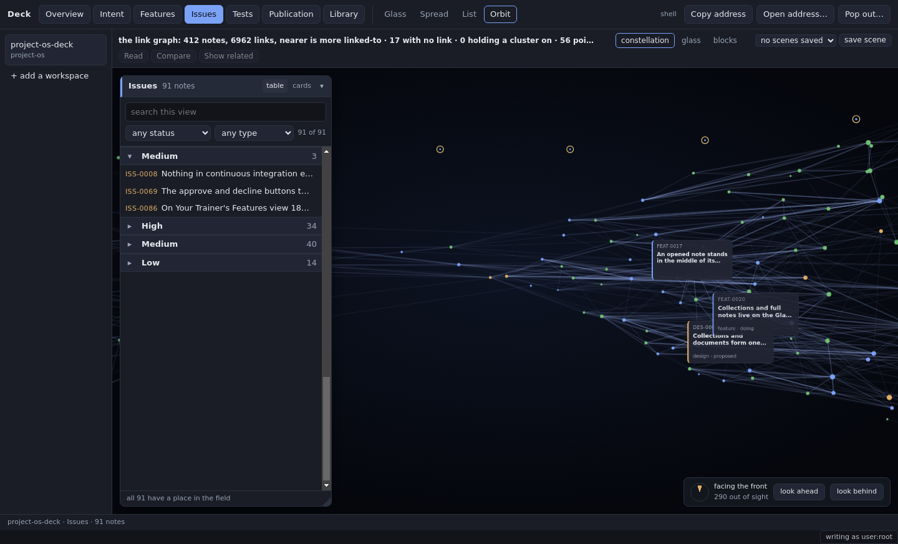
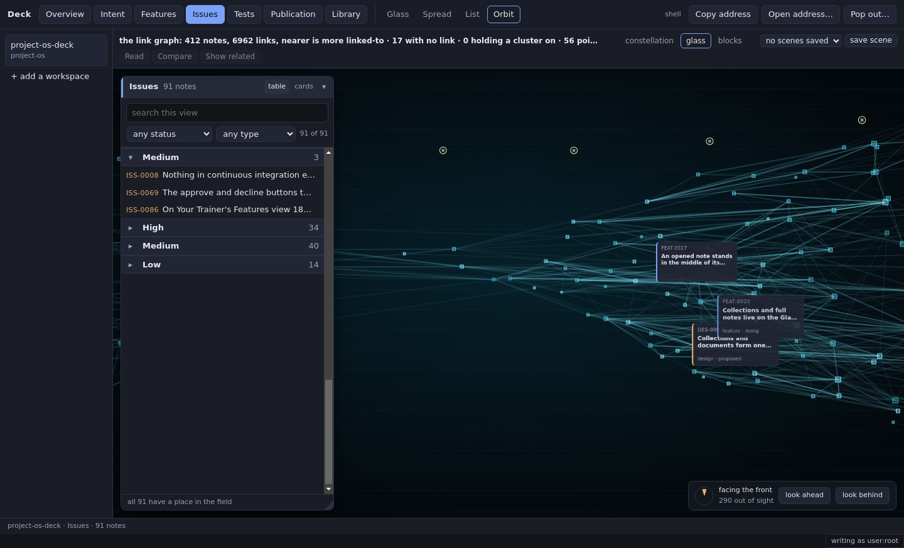
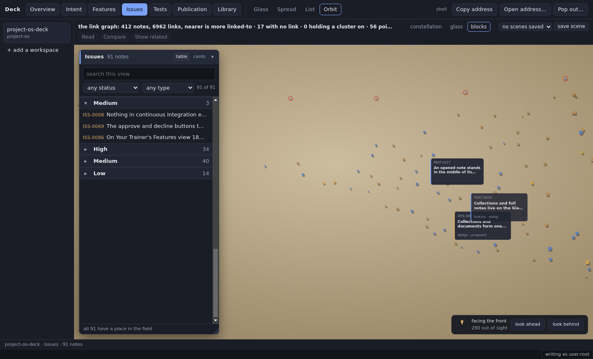

These are captures of the built application over the same 412 notes in project-os-deck, taken on 14 October 2026 at revision 9948c9d. Every treatment keeps the same note positions and camera. The application remains switchable; Edwin's choice and reason are still pending.



Constellation's link callout showed the source text for a link. In Blocks, hovering the near card FEAT-0017 gathered its 40 neighbours. Hovering a painted canvas node did not start that interaction. The renderer's canvas pointer handler does not request a neighbourhood, so Blocks does not yet provide the promised replacement for every node.
Recommendation: Constellation preserves the graph's links and separates its status colours. Choose Glass if the consistent instrument appearance is worth weaker colour distinctions. A Blocks choice still needs an answer for relationships on painted nodes.
The graph request returned 7,198 link records, including 6,962 resolved links. The view contains the whole corpus; this camera shows only part of it. Captures were made at 1440 × 900 in the existing Linux container, with reduced motion enabled for a fixed camera. This checks switching and placement, not laptop performance or a person's usability verdict.
Capture log · Replay script · Task and pending decision · Original design